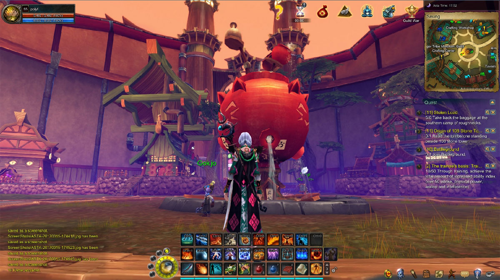

MMORPG, sigla para Massively Multiplayer Online Role-Playing Game, é
um estilo de jogo muito divertido e impressionante. Cada vez mais são
lançados jogos neste estilo pois com certeza são os mais procurados pelos
gamers, devido às suas cativantes e interessantes histórias, cenários,
músicas, gráficos, jogabilidade e muito mais.

Os MMORPGs são o meu estilo de jogo favorito pois é baseado em ficção,
no entanto não é ficção futurista e sim mais medieval e antiquada.
Se formos ver, praticamente quase todos os MMORPGs se baseiam na vida
medieval e mágica, antigamente acreditava-se muito nisso então os MMORPGs
são também conhecidos pelo fato de serem os jogos com personagens que
para além de espadas têm capacidade de usar magia.
Em MMORPGs somos possibilitados de criar um personagem personalizado
ao nosso gosto dentro das opções disponíveis, variando entre os jogos,
que no fim tem o objetivo de fazer conquistas, derrotar chefões em
masmorras junto de amigos ou até mesmo sozinho, sem contar que tem também
o famoso PvP, Player versus Player, que é muito admirado por jogadores
deste estilo de jogo.
Abaixo estão 5 dos MMORPGs que eu mais admiro e recomendo ao público independente da idade. São jogos completamente cativantes e surpreendentes quanto à sua jogabilidade e gráficos.
| JOGO | PREÇO | LINK |
|---|---|---|
| TERA | Free To Play | TERA |
| GUILD WARS 2 | Free To Play / Pay To Win | GW2 |
| BLADE AND SOUL | Free To Play / Pay To Win | BNS |
| WORLD OF WARCRAFT | Pay To Play / 22€-80€ mês | WOW |
| AION | Free To Play | AION |